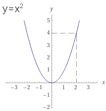

הגדרות
יחס בין קבוצה A לקבוצה B הוא פונקציה אממ כל איבר ב A משוייך בדיוק לאיבר אחד ב B
פונקציה היא שלשה סדורה ⟨A,B,G⟩ ש A ו B הן קבוצות, ו G הוא תת-קבוצה של A×B, כך שלכל a ב A יש b יחיד ב B שמקיים (⟨a,b⟩ שייך ל G)
A הוא תחום, B הוא טווח, ו G הוא גרף
𝒇(x)=y ⟺ ⟨x,y⟩∈𝒇 הדמות של x ע"י 𝒇 היא y, ו-x הוא מקור של y ע"י 𝒇
פונציה היא תת-קבוצה של A×B שמקיימת:
לכל x ב X יש y ב Y כך ש ⟨x,y⟩ שייך ל 𝒇
לכל x ב X, מתקיים y1,y2 שייכים ל Y (אם ⟨x,y1⟩ שייך ל 𝒇 ו ⟨x,y2⟩ שייך ל 𝒇 אז y1=y2)
דוגמאות

𝒇=⟨[-2,2], [0,5], {⟨x,x2⟩|x∈[-2,2]}⟩
Domain / תחום: D(𝒇)=[-2,2]
Range / טווח: Ra(𝒇)=[0,5]
Graph / גרף: G(𝒇)={⟨x,x2⟩|x∈[2,−2]} הגרף קובע את התחום ואת התמונה
Image / תמונה: Im(𝒇)=[0,4] התמונה מוכלת בטווח
𝒇(2)=4 and 𝒇(−2)=4 4 is the image of 2,−2; and 2,−2 are sources of 4
לשים לב